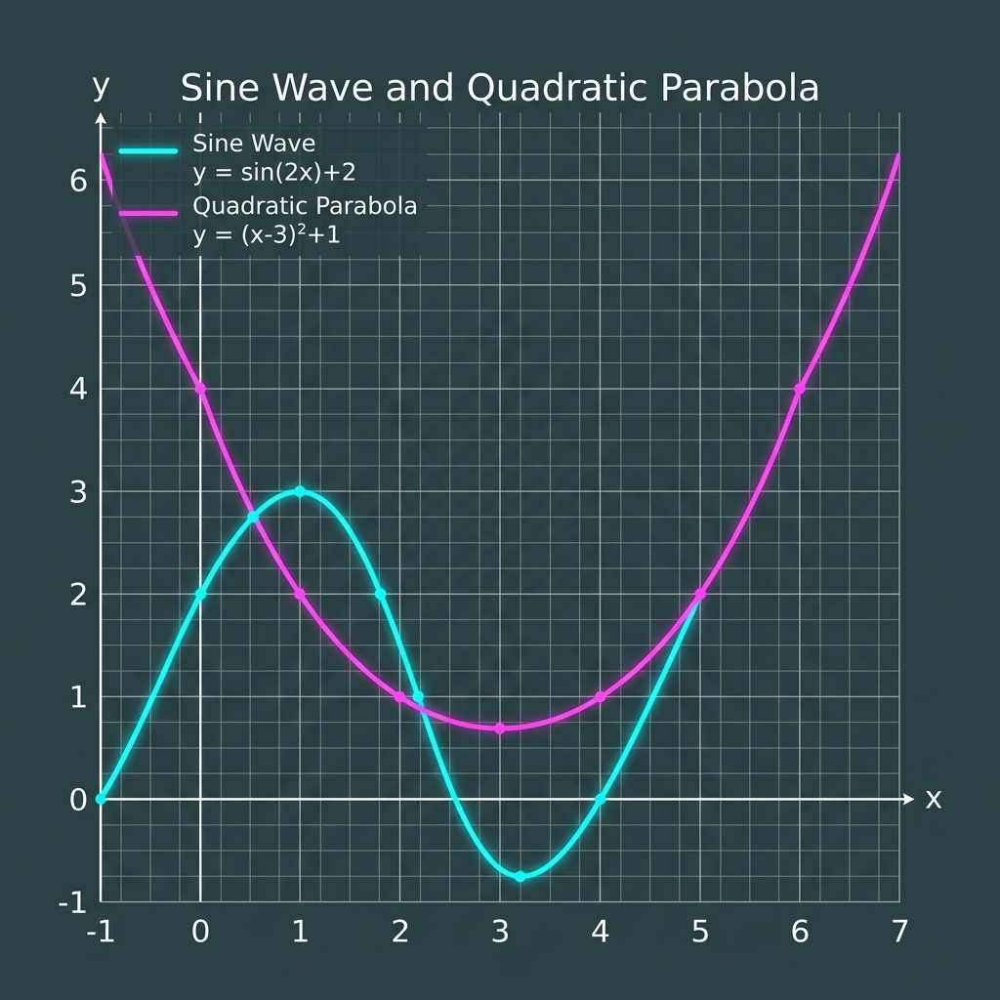

Test0
Technical Mathematics Test Document
This document demonstrates and tests mathematical equations spanning both Algebra and Calculus, rendered using three distinct dialects: LaTeX, Typst typeset, and SymPy.
Skip to H3: Algebra Equations
Below are five algebra-themed equations.
LaTeX (Algebra 1): The expansion of a binomial squared.
LaTeX (Algebra 2): The quadratic formula to solve in fraction format.
SymPy (Algebra 3): Factoring the difference of two squares.
Typst (Algebra 4): The logarithmic product rule.
SymPy (Algebra 5): The determinant of a matrix.
Skip to H3: Calculus Equations
Below are five calculus-themed equations.
LaTeX (Calculus 1): The fundamental trigonometric limit.
Typst (Calculus 2): The Fundamental Theorem of Calculus.
LaTeX (Calculus 3): The derivative of the natural exponential function.
Typst (Calculus 4): The solution to the Basel problem.
SymPy (Calculus 5): Derivative of the sine function.
Visual Representation
Here is a graph visualising some of the functions:

Tabular Data (Inaccessible Layout)
| Value A | Value B | ||
|---|---|---|---|
| Row 1 | 12.5 | 14.2 | 19.1 |
| Row 2 | 10.1 | 9.8 | |
| Row 3 | 22.0 | ||